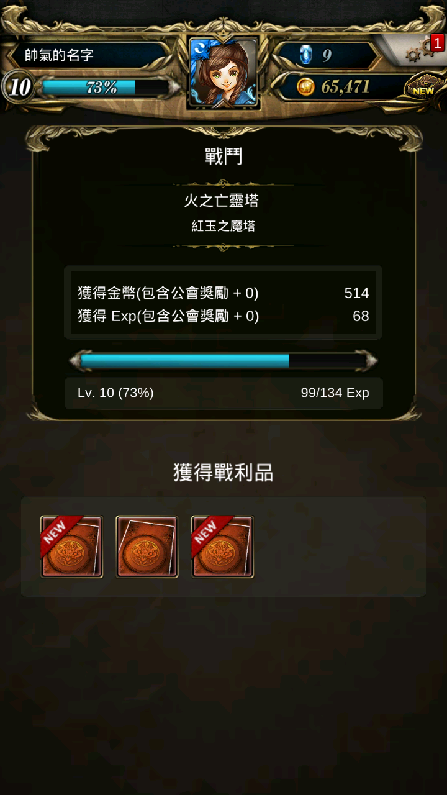

手機版遮蔽圖
抱歉，放錯了，應該是要放這張才對
「Explosion !」
沒錯，今天要教你如何在開局一小時內有效率的比其他菜鳥玩家更高機率成功拐騙到紅衣小蘿莉 Mugumi !

前置作業
點我跳到抽卡部分首先，你需要去下載神魔之塔←點我進官網
然後，點開他(這不是廢話嘛)
選擇「直接開始」後，當然要為自己建立一個帥氣的名字啦，就像這樣：

接著，到了選擇伙伴的時候，這裡請選擇水屬莫莉，因為之後送的水遊俠對新手較有幫助(我絕對不會說當初選莫莉是因為她是女角)
接著，跟著貓頭鷹的導引進到了以諾塔進行了第一場戰鬥後...
然後...繼續跟著新手導引...
直到你獲得了5顆石頭後，加上等待完那預估下載時間來亂的更新後...
恭喜你，經歷了千辛萬苦，看完了一大堆貓頭鷹的廢話後，接下來總算可以學習如何高機率的將紅衣小蘿莉 Megumi 收為己用了~
(強烈建議，正文開始之前，到右上角的「齒輪」→「設定」調成以下模式)

點選中間「以諾塔」→「通靈者的認可」→「立志登塔」→右下角「徵求戰友(首次免費)」→找到火屬性人類「No. 1083(威靈護法．哪吒)」→「招募傭兵」→按下「確定」
接著，就準備開始領石之路啦~
首先，第一關是「立志登塔」，我們可以上神魔維基搜尋關卡資訊←點我查詢關卡資訊
(查詢方法：「神魔之塔 (關卡名) 關卡資訊」)
可以發現，哪吒(戰友)隊長技每回合都可以打出50000傷害→只要小怪扣掉防禦力的血量低於50000時10等前都還可以過，光是從以諾塔0-1推到以諾塔1-1就足足領了快10顆
如果中途像這樣爆包的話，別用石頭去擴充包包，因為前期獲得的東西都沒什麼用，賣掉標號較低的卡片就好
當升到10等時獎賞會有一堆東西可領
領完獎賞後，把剛剛領到的卡片把隊伍生命力稱起來吧~(隊伍主要的攻擊力靠哪吒的隊伍技能)
你會發現隊伍的血量變得好多
因此，就跟你說說之後可以從哪獲得石頭吧
到這裡，你已經累積了45石了，接下來，進入左上角的「古神遺跡」
(在取得最後的5石前，建議先參考後記)
這關要注意的是最後一關是強化盾，無法靠隊友哪吒隊長技打
累積石頭：46
這關是專門為150等以下新手開的關卡，帶哪吒就可以通關領石頭了
累積石頭：47
(進入「古神遺跡」)選擇「魔劍降臨之日」，通過高級關卡，拿石頭
高級難度的關卡，有機率出現防禦力9萬的怪，所以哪吒無法破防(造成傷害)，需手轉攻擊
累積石頭：48
進入「古神遺跡」)選擇「狩獵珍獸之日」，通過高級關卡，拿石頭
高級難度的關卡，有機率出現血量10萬的怪，所以哪吒需打3次((5萬-怪防禦力)*3≧10萬)才有辦法打死，需注意自己的剩餘血量，適時回血
累積石頭：49
(進入「古神遺跡」)選擇「尋找水晶之日」，通過高級關卡，拿石頭
高級難度的關卡，有機率出現血量9萬的怪，所以哪吒需打2次才能將怪打死，需注意自己的血量，適時回血
累積石頭：50
(以上圖片版權皆屬Madhead)